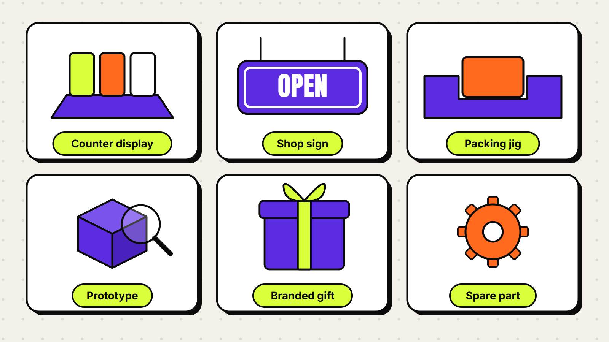
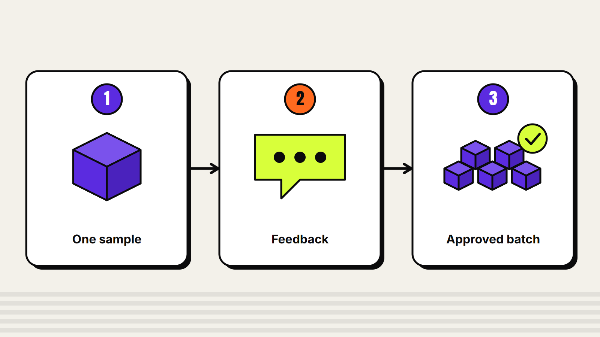

Small businesses often need things that do not exist in quite the right form: a counter stand for a new product, a sign with the shop name, a jig that speeds up packing, or a sample of an idea before investing. 3D printing can supply these in small numbers. Here is where it helps, where it does not, and how to order well.

For thousands of identical items, moulding usually costs less per piece. For printed paper, signage vinyl, or metal plates, other trades may be better. Safety-critical, food-contact, and electrical parts need certified production. Compare methods in our guide.
| Question | Why it matters |
|---|---|
| What problem does it solve? | Keeps the design focused |
| How many now and later? | Shapes price and method |
| Where will it sit? | Decides material and finish |
| What brand colours? | Filament colours may differ from brand shades |
| When is it needed? | Sets lead time |
| Who owns the design? | Avoids disputes later |

Order one sample, use it in the real place for a few days, and gather feedback from staff and customers. Change size, angle, or colour, then approve the batch. A sample costs far less than correcting fifty.
Use your own logo and artwork, and supply clean files. Do not request other companies' logos or characters. Decide in writing who keeps design files and whether the design can be reused for others. Our file terms and copyright guide explain the basics. For contracts, take professional advice.
Add your company name and GSTIN for a GST invoice. Where products have bulk price ranges, they show on the product page with a button to request a bulk quote. Larger jobs may start with an advance. See business and bulk orders.
Price depends on size, material, colour changes, finishing, design work, and quantity. A clear brief reduces revisions. Single-colour parts with few supports are the most economical.
"We need 20 counter stands for greeting cards, each holding 15 cards, 105 mm wide. Indoors, white, with our shop name on the front. One sample first. Needed before the festival season."
That brief covers purpose, size, quantity, finish, branding, sample, and timing.
Once a batch works, save the approved design name, material, colour, quantity, and a photograph in one place. When stock runs low, quote the earlier reference so the new pieces match. If you change the product the stand holds, send the new size before ordering, because a few millimetres can decide whether it fits. Review printed fixtures now and then for cracks or wear, especially on items staff handle all day, and replace them before they fail during a busy period.
Printing suits very small numbers, including a single sample. Ask in your request, since setup work is easier to justify as the quantity grows.
Filament comes in set shades, so an exact match is often not possible. Approve a physical sample, or consider painting where it is offered.
Well-designed indoor pieces handle daily use, but they can scratch and thin parts can snap. Keep them out of strong sun and heat.
Quote your earlier reference and confirm the material and colour. Shades may vary slightly between filament batches.
You can send a finished file, or describe the idea for a design and print job. Agree ownership and reuse in writing before work begins.
No. Keep food on proper food-contact materials. Printed stands can hold wrapped goods, cards, or signs.
Decide in advance how you will know the piece is worth reordering. A display might make products easier to browse, a jig might cut packing mistakes, and a sample might help a customer say yes. Note what happens over a few weeks. Honest observations tell you whether to refine the design, order more, or stop.
Send your brief and files through the quote form, or ask our design service to develop the idea. See from idea to prototype for testing methods.